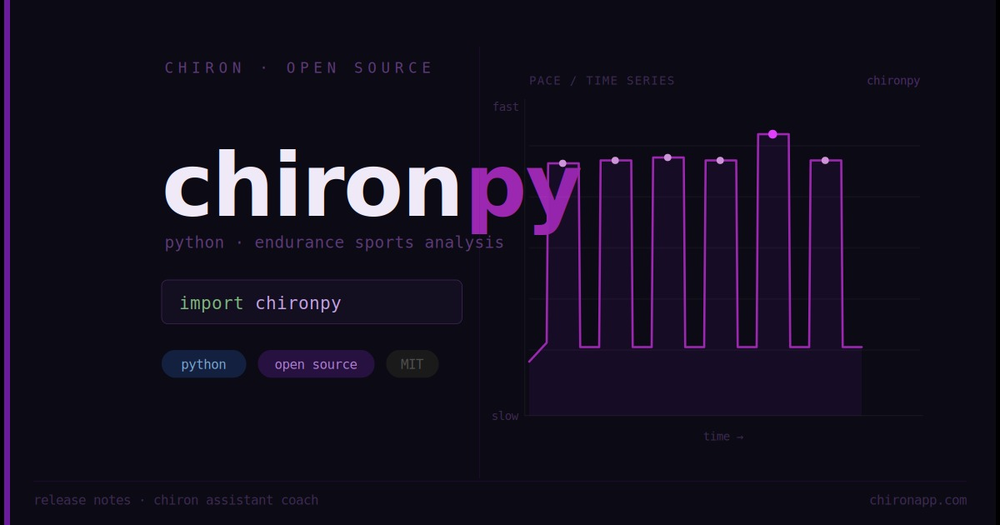

chironpy¶
Endurance sports analysis library for Python
chironpy is a Python library for analysing endurance sports data. Load workouts from .fit, .gpx, .tcx, or the Strava API and analyse them with a familiar pandas-based interface — compute best intervals, elevation gain, speed, power, and more.
Installation¶
# with uv (recommended)
uv add chironpy
# with pip
pip install chironpy
The WorkoutData Class¶
At the core of chironpy is the WorkoutData class. It provides a standardised structure for representing workouts and includes built-in methods for computing metrics, smoothing data, and extracting performance intervals.
Key Features¶
- Standardised data structure from multiple supported file formats (
.fit,.gpx,.tcx) and the Strava API - Wraps
pandas.DataFrame— use any pandas method directly - Standardised columns:
speed,power,heartrate,cadence,elevation,distance,latitude,longitude. See nomenclature - Resamples activity data at 1 Hz by default for clean time-series analysis
- Built-in metric computations: best time and distance intervals, elevation gain, grade
Example¶
from chironpy import WorkoutData
# Load workout from file
data = WorkoutData.from_file("path/to/file.fit")
# Elevation gain
gain = data.elevation_gain()
# Best time-based intervals
durations = [30, 60, 120, 300, 600, 1200, 1800, 3600] # seconds
max_hr = data.best_intervals(durations, "heartrate")
# Best distance-based intervals
distances = [1000, 5000, 10000, 21100] # metres
fastest = data.fastest_distance_intervals(distances)
# Resample to 10-second buckets
data.resample("10s")
More information about running metrics can be found here.
The data structure returned by WorkoutData is standardised across file types. Read more here.
Contributing¶
See contributing.
Contributors¶
Attribution¶
chironpy is a maintained fork of sweatpy by Maksym Sladkov and Aart Goossens.
With thanks to Aaron Schroeder for work on running power and elevation metrics in heartandsole and spatialfriend.
Changelog¶
See CHANGELOG.md for a full list of changes and version history.
License¶
See LICENSE file.